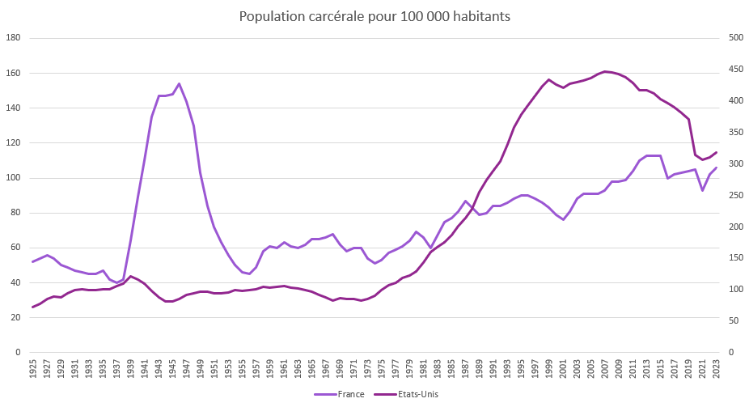

Le grand retour de la peine de mort en spectacle aux États-Unis
Regards sociologiques et philosophique sur le cas Nidal Hasan, avec une réflexion sur la spectacularisation de la peine
IMPORTANT : cet article a été en partie rédigé et réfléchi avant les dernières annonces concernant cette peine de mort. Il a été corrigé en conséquence, mais certains éléments peuvent subsister. N’hésitez pas à les signaler.
Introduction
Pete Hegseth, secrétaire de la Guerre aux Etats-Unis a annoncé, durant la nuit du 8 au 9 octobre (heure française), que l’exécution de Nidal Hasan ferait l’objet d’une diffusion publique : « Une évidence, l’exécution par peloton d’exécution… Nous allons veiller à ce que les gens puissent regarder, à ce que ce soit public. »1 Il est confirmé dans son propos par le Président des Etats-Unis d’Amérique Donald Trump peu après : « J’imagine qu’ils veulent [le Pentagone] que cela serve d’exemple, et je le comprends très bien. »2 La dernière exécution publique officielle aux Etats-Unis a eu lieu le 14 août 1936 au Kentucky, soit il y a près de 90 ans.
Qui est Nidal Hasan, le condamné à mort ?
Nidal Hasan était major3 (l’équivalent de commandant dans l’armée française) de l’armée américaine, détaché à Fort Hood en juillet 2009 au sein du Carl R. Darnall Army Medical Center comme médecin psychiatre pour y soigner des soldats blessés de retour d’Irak et d’Afghanistan. Le 5 novembre 2009, il ouvre le feu dans un centre de préparation, tue 13 personnes et en blesse 29 autres. Une enquête révèlera qu’il avait échangé, avant de passer à l’acte, des messages avec Al-Awlaqi, imam, conférencier et propagandiste de nationalité américano-yéménite, qui faisait partie des cadres et recruteurs les plus importants de l’organisation terroriste Al-Qaïda dans la péninsule arabique4. Le commandant de Fort Hood (lieu où a eu lieu l’attaque), renvoie l’affaire devant un tribunal militaire où il est reconnu coupable, et condamné, le 28 août 2013, à la peine capitale.
Pourquoi avoir voulu une exécution publique ? Pourquoi est-ce exceptionnel ?
Cette peine publique est justifiée par la dissuasion, l’avertissement public, et par le fait de montrer qu’il y a de « graves conséquences »5 à ce type d’attaque. Elle s’inscrirait, selon Pete Hegseth, dans une « mentalité de Seconde Guerre mondiale »6, c’est-à-dire une fermeté implacable vis-à-vis de l’ennemi (mais aussi, dans une certaine mesure, d’après d’autres sources, dans une sorte de croisade religieuse nourrie par le passé du secrétaire à la défense, du christianisme contre l’islamisme7). Mais cette condamnation est exceptionnelle. Nous avons précisé, ci-dessus, que la dernière exécution publique aux Etats-Unis datait d’il y a 90 ans. Plus généralement, lorsqu’on s’intéresse aux pays occidentaux, on fait le constat suivant : celles-ci ont toutes eu lieu il y a plus de cinquante ans : en 1937 pour les Etats-Unis, en 1939 pour la France, en 1868 pour le Royaume-Uni, en 1869 pour le Canada, en 1858 pour la Nouvelle-Zélande, etc. Les plus récentes, difficilement déterminables à cause des troubles qui ont suivi la Deuxième Guerre mondiale, se déroulent en Italie, en Autriche et en Allemagne entre 1945 et 1950. Selon Amnesty International8, 2/3 des pays ont aboli la peine de mort en droit ou en pratique. Au début du 20ème siècle, ils n'étaient que trois ou quatre Etats.
Du coup, est-ce que les peines deviennent plus humaines ?
« La France traverse la période la plus répressive de son histoire récente en temps de paix », selon Didier Fassin9. En soixante ans, la démographie carcérale aurait été multipliées par trois et demi, passant de 20 000 détenus en 1955 à 70 000 prisonniers en 2016. Aux Etats-Unis, on constate une dynamique similaire (bien qu’il y ait une baisse par rapport aux pics des années 1980-2010) :

Pour Didier Fassin, elle ne traduit pas une hausse de la criminalité, mais plutôt un changement dans la sensibilité aux « illégalismes et aux déviances ; une focalisation du discours et de l’action publics sur les enjeux de sécurité », notamment les délits mineurs qui représentent la plus grande part de l’augmentation des condamnations.
Les évolutions de la punition
Dans Surveiller et punir10, Michel Foucault fait le constat d’un « effacement du spectacle punitif » ; suppression du pilori en 1789, puis en 1837 en Angleterre ; suppression des travaux publics en Suisse, aux Etats-Unis, en Autriche, spectacle remplacé peu à peu par des mesures administratives plus discrètes, plus « pudiques », pour reprendre le vocabulaire utilisé. Mais ce n’est pas l’effet d’un « processus de civilisation »11 qui s’inscrirait dans un humanisme généreux, au contraire. L’objectif change, du « cérémonial politique » où il s’agit de rendre visible la force du souverain et de réinscrire la loi dans le corps (« J’imagine qu’ils veulent [le Pentagone] que cela serve d’exemple, et je le comprends très bien. » dit Donald Trump) vers un redressement de l’âme où les habitudes, les désirs, les manières de se conduire, les comportements, sont contrôlés et disciplinés : « l’univers carcéral, c’est un espace-temps. Un espace confiné pour un temps contraint ». 12
Cette philosophie nouvelle trouve son origine dans les débuts de l’industrialisation (Adam Smith publie La Richesse des nations en 1776 et théorise la parcellisation des tâches, celle-là même qui sera poussée à son paroxysme avec Taylor dans Les principes d’organisation scientifique du travail en 1911, réappropriée dans des modalités différentes avec les usines Ford). Elle s’articule avec la pensée néolibérale13 qui connait un essor fulgurant après la Seconde Guerre mondiale : l’économie des moyens, et par glissement, la nouvelle économie du pouvoir, sont devenues les maitres mots du siècle et le colloque de Walter Lippman (1938) qui réunit plusieurs figures parmi les plus importantes des sciences sociales (notamment Wilhelm Röpke, Friedrich Hayek, Ludwig Von Mises, Jacques Rueff ou même Raymond Aron), en est une des formalisations scientifiques. « Puisque l'État est de toute façon porteur de défectuosités intrinsèques, demandons à l'économie de marché d'être en elle-même, non pas le principe de limitation de l'État, mais le principe de régulation interne de l'État de bout en bout de son existence et de son action »14, résume ainsi Dominique Méda. On raisonne davantage en coûts, en moyennes, et en seuils acceptables plutôt qu’en interdits et en permis.15
À cela s’ajoutent les conséquences produites par le spectacle de l’exécution, contradictoires avec l’objectif de faire du corps l’objet du pouvoir et de la souveraineté du monarque. La sympathie envers le condamné, d’abord, là où il s’agissait de faire haïr le criminel, la justice devenant monstrueuse en lieu et en place de celui-ci ; les émeutes, le retournement contre le pouvoir, ensuite, le condamné devenant martyr parfois ; l’inefficacité disciplinaire du spectacle enfin, lorsque la violence devient banale ou le lieu de divertissements (remarquons, à ce titre que l’exécution devait être diffusée en direct sur les médias).
Comment s’explique ce retour de l’exécution publique ?
Peut-on, dès lors parler d’un retour en arrière ? L’annonce d’une exécution retransmise publiquement semble à première vue inverser cette évolution. Il serait excessif d’y voir un retour des supplices de l’Ancien Régime, c’est au contraire ce que Foucault appelait un fond « suppliciant », violence qui continue de s’exercer, de façon moindre, isolée, et à l’abri des regards la plupart du temps : Roger W. McGowen, dans un ouvrage intitulé Messages de vie du couloir de la mort, mentionne souvent le lockdown et le shakedown, cette dernière pratique que Christine Singer qualifie de « mini-ouragan », c’est-à-dire que les gardiens « viennent et sèment le désordre total dans les maigres affaires [des détenus], déchirant des couvertures de livres ou des lettres, versant du ketchup sur des photos de famille, etc. » Le revirement16 opéré par Donald Trump et son gouvernement (porté notamment par le vice-Président des États-Unis, J. D. Vance) confirme ce « résidu » statistique.
La spectacularisation de la punition par les institutions
La dimension, sans doute novatrice de cette peine de mort, et qui vient nuancer les grilles de lecture apportées par la perspective foucaldienne, c’est qu’elle a été pensée pour être diffusée à grande échelle à travers les réseaux sociaux17 : on quitte le lieu matériel d’une « pudeur » punitive, et on lui préfère une visibilité immatérielle uniquement : l’exécution de Nidal Hasan devait rester fermée au public. La chose est loin d’être anodine. Nayib Bukele, président du Salvador, avait déjà constitué un précédent en diffusant des vidéos des détenus du CECOT18 : on voit notamment sur les images, les condamnés sortant des avions menottés aux poignets et aux chevilles, poussés tête baissée par des gardes en tenue anti-émeute, transportés en convois militarisés ; on les voit agenouillés dans de vastes hangars, crier leur nom face à la caméra, se faire raser la tête au rasoir électrique, etc.
La pudeur dont parle Foucault s’inscrit dans une légitimation de la justice (éviter que celle-ci ne paraisse monstrueuse) : « les notations de l’infamie se redistribuent : dans le châtiment spectacle, une horreur confuse jaillissait de l’échafaud ; elle enveloppait à la fois le bourreau et le condamné : et si elle était toujours prête à inverser en pitié ou en gloire la honte qui était infligée au supplicié, elle retournait régulièrement en infamie la violence légale de l'exécuteur. »19 Quels sont les objectifs de ces Etats ? Ils sont encore flous, néanmoins, voici quelques hypothèses qui valent ce qu’elles valent sur les grandes structures et dynamiques qui pourraient justifier ce déplacement de la « pudeur » matérielle vers une visibilité immatérielle.
D’abord, il est probable que l’Etat redéfinisse sa légitimité politique autour de la sécurité, avant toute autre chose (y compris le pouvoir d’achat). En cela, la figure du criminel est particulièrement utile, puisqu’elle permet de matérialiser une menace, de désigner un ennemi et de mettre en scène la réponse du pouvoir. Les élections de 202420 au Salvador, pourtant sous régime d’exception depuis 202221 vont en ce sens, puisque Nayib Bukele est réélu à 84.65% des voix, soit près de 78 points de plus que le second arrivant.


Sur les graphiques ci-dessus, on s’intéresse aux thèmes de campagne lors des élections de premier plan en Allemagne, aux Etats-Unis, au Brésil et en France, sur deux périodes différentes, 1990-2000 et 2020-2026. La comparaison reste difficile, notamment parce que le contexte conjoncturel n’est pas le même, ainsi que le nombre d’élections importantes dans ces pays. Néanmoins, on peut observer que la sécurité ou la criminalité ne sont pas prioritaires dans le débat sur la période 1990-2000, au contraire de l’économie, de l’emploi, du chômage, de la santé et de la protection. Elles le deviennent toutefois sur la période 2020-2026, tout comme l’immigration. Une autre possibilité qui pourrait expliquer cette spectacularisation de la punition se trouve dans la désinhibition de la violence institutionnelle lorsqu’elle s’exerce sur des personnes dont la dignité est politiquement dévaluée. En qualifiant le condamné d’« ennemi » ou de « terroriste », le pouvoir le prive de toute humanité juridique et politique.
Conclusion
L’exécution publique de Nidal Hasan ne devait pas être une simple lubie de Pete Hegseth, mais plutôt une réaffirmation de l’autorité traditionnelle de l’État ; elle constituait en cela une sorte de résidu statistique de ce que Foucault appelait un « fond suppliciant ». En vérité, la grande nouveauté par rapport à la perspective foucaldienne se trouve plutôt dans un rapport décomplexé à la diffusion d’images de la peine, là où prévalait auparavant une certaine pudeur. Il est fort probable que ces changements traduisent en fait aussi une redéfinition du rôle de l’État autour d’un noyau sécuritaire (et au détriment de ses autres fonctions régaliennes).
- https://www.facebook.com/reel/1875618540461852↩
- https://www.facebook.com/reel/1827650834909308/↩
- https://en.wikipedia.org/wiki/Nidal_Malik_Hasan?oldid=627890481#Prior_to_Fort_Hood_shooting↩
- https://fr.wikipedia.org/wiki/Anwar_al-Awlaqi↩
- Fort Hood shooter: Pentagon plans public livestream of firing squad execution | CNN Politics↩
- Fort Hood shooter: Pentagon plans public livestream of firing squad execution | CNN Politics↩
- Pourquoi Pete Hegseth veut-il diffuser en direct une exécution ? : NPR↩
- https://www.amnesty.org/fr/documents/act50/6591/2023/fr/↩
- Didier Fassin, Punir, une passion contemporaine.↩
- Surveiller et Punir↩
- Norbert Elias.↩
- Didier Fassin, L’ombre du monde. Anthropologie de la condition carcérale.↩
- Michel Foucault, Naissance de la biopolitique.↩
- Dominique Méda, Pour une société plus désirable.↩
- Michel Foucault, Sécurité, territoire, population.↩
- Nidal Hassan : Trump annule la diffusion en direct de l'exécution par un peloton de l'auteur de l'attaque de Fort Hood. - BBC News Afrique↩
- Nidal Hassan : Trump annule la diffusion en direct de l'exécution par un peloton de l'auteur de l'attaque de Fort Hood. - BBC News Afrique↩
- What we know about CECOT, El Salvador's mega-prison taking Trump's deportees - ABC News↩
- Michel Foucault, Surveiller et punir.↩
- Élection présidentielle salvadorienne de 2024 — Wikipédia↩
- Au Salvador, les voix dissidentes tues par l’état d’exception - RFI↩